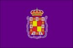
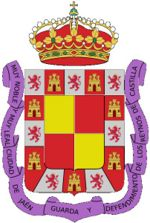

Jaén
 De: La Frikipedia, la enciclopedia extremadamente seria.
De: La Frikipedia, la enciclopedia extremadamente seria.
| De la serie ciudades del mundo:
|
| Jaén
|
| 
|

|
| (Bandera)
|
(Escudo de armas)
|
|
| Topónimo oficial
|
Jaen ni pollas
|
| País
|
Ehpaña
|
| Código postal
|
23XXX
|
| Superficie
|
Obras, pueblos y muchos olivos
|
| Altitud
|
Puff, eso coge un metro y lo mides
|
| Distancia
|
0 Km. de Jaén
|
| Fundación
|
Eso coge un libro y lo miras, ni pollas
|
| Población
|
Yo y tos los que estamos
|
| Gentilicio
|
Jiennense, giemnense, jaenero y de Jaén ni pollas
|
| Alcalde
|
Luis Pérez Montoya ((tocame la polla))
|
| Lema Nacional Callarsus ya, ni pollas.
|
Lugar de puta madre en Andalucía donde hay muchas olivas, muchos carriles pa' irse con la bicicleta, aunque hay tantas cuestas que en realidad para usar la bicicleta hay que irse a la Vía Verde Del Aceite, en la que puedes llegar (si llegas) a través de sus camino de peñones de Gibraltar a TorreDelCampo, TorreDonJimeno, Martos, Alcaudete, Etc... Le rogamos que si pasan por La Vía Verde se lleven una bicicleta con amortiguaciones (por los peñones de Gibraltar antes mencionados) o por el contrario si van andando llévense unas zapatillas resistentes porque en verano si pasan por allí podrán observar que las zapatillas se van derritiendo por el camino y es que en verano el asfalto (¿hay de eso?) tiene una temperatura de por lo menos 60 Cº o 70 Cº.
Festejos y holganzas
- La feria de Jaén, en octubre comenzando el día de San Lucas, el patrón, y coincidiendo con la festividad nacional de la Virgen del Pilar (para no trabajar e irnos a la feria). Se caracteriza por ser una feria en la que se acoge a todo el mundo, sin casetas privadas ni nada, y en la que disfrutan todos, niños, mayores y, por desgracia, canis también.
- La Fiesta De San Antón, la noche del 16 al 17 de enero, en la cual se realiza la conocida "Carrera de San Antón" y los jiennenses aprovechan para salir a la calle con rosetas(palomitas de maíz), antorchas y demás artilugios para animar a los que corren, al sonido de "mira, por ahí va Pepe!!", "mira el paco, si va de los primeros" o "venga, vamos a hacerles palmas a estos que son los últimos". Por otra parte, se realizan las conocidas Lumbres de San Antón, en la que los distintos residenciales repartidos por la ciudad queman olivas, cartón, paletas, etc, etc. Se dio un caso en el que un individuo quiso tirar al fuego a su invierno.
- Pronunciamentos de una bicicleta con altavoces que recorre la ciudad y las comarcas de esta, incluyendo torrequebradilla, fuerte del rey, arjona, villar de cuevas,..
- también están los típicos botellones de fin de semana que a cada poco tiempo cambian de punto de reunión por motivos varios como lo son la policía o que ya no "molen".
- Romeria/Fiestas del "cristo del arroz": multitudinarias fiestas en honor al cristo de charcales, celebradas en todo el barrio de la glorieta y pedanias,donde todo el barrio se echa a la calle en su fervor cofrade. Es habitual que algún niño cantor cante saetas desde su ventana. También los jóvenes se congregan horas antes en la ermita para hacer el salto de la verja para sacar el cristo a hombros.
- Ciclos de rock: En primavera, en el auditorio del parque la alameda por sanidelfonso. Son una serie de conciertos gratuitos que participa cualquier grupo local.Depende la suerte, que sean mas cañeros y duros, o mas poperos. En esta epoca del año coinciden raperos, metaleros, skaters y demas gente pertenecientes de tribus diferentes, aunque el evento este dedicado a las tribus mas rockeras, ya que en la alameda en esa epoca del año la policia no te replica nada ni te multa por beber, siempre y cuando sea en esa epoca del año claro. Tambien es muy buen sitio ya que en esa epoca no abundan los modernitos kies y demas gente debido a la musica de los conciertos.
Monumentos
- El castillo de Santa Catalina, desde el que se pueden contemplar preciosas vistas de la ciudad, especialmente desde la cruz. Es habitual escuchar la frase "mira,mira, ahí vivo yo, lo ves, lo ves? He encontrado mi casa..." Y el de al lado no se baja hasta encontrar la suya. De hecho hay quien habla de un espíritu que habita en las habitaciones del parador. En realidad era uno que no encontraba su casa y aún la sigue buscando.
- La catedral de Jaén, nombrada patrimonio de la humanidad.
- Los baños árabes.
- Socavón del parking avenida.
- Baches de la carretera de Córdoba.
- Hoyos de la carretera circunvalación.
- Museo de la cárcel vieja. (Todos escombros)
- Cientos de obras por toda la ciudad.
- Los peñascos de la vía verde.
- Las grúas repartidas por toda la ciudad que ya superan en número a las de Madrid.
- El culto gitano de la alcantarilla
- El campillo de la glorieta
- La taberna "Los Hijarros"
- "La marga" heladería situada en los poyetes de la glorieta
- Sala de fiestas "fantasía" en la carretera de las infantas.
- la magdalena:lugar de culto cani y gitano q si entras en el sales sin nada.Tambien es el lugar onde reside el machuca(1 delos 200 qe hay en jaen) *colinas del castillo:lugar donde intentan colar tiza en polvo por coca ni pollas
- La casa de las bromas, situada cerca de los jardinillos.
- El tren de la bruja, también conocido como tranvía de Jaén.
- El A.V.E. (bueno, pero aquí le llamamos la Pava nipollas)
- El bar Gallos, de los pocos garitos metaleros del lugar.
Palabras típicas
Son muchas las palabras típicas de Jaén pero ninguna es más conocida como la palabra ni pollas. Esta palabra puede ser colocada de diferentes formas:
- A principio de la frase: "Ni pollas chiquillo tráeme las alpargatas"
- En mitad de la frase: "pásame ya ni pollas de una vez las llaves
- Al final de la frase: "no sabes lo que es Oborus ni pollas"
- Como frase: "ni pollas es que no sabes...ni pollas"
- los coches de bakalas con su música repetitiva y con un volumen que molesta a las horas en que salen.
- Y en miles de formas diferentes (solo Monesvol las conoce todas).
- Ya has quedao como chamizo ni pollas
- Dame una miajilla pipas, ni pollas
- Se me ha olvidao la chamarra ni pollas
- ¿¿¿Dónde vas con la pelliza???¡¡¡Ni pollas!!!
- De la alcantarilla tenias que ser.... ¡¡¡Ni pollas!!!
Personajes Famosos
- Raphael, también conocido como el ruiseñor de Linares es uno de los famosos cantantes de la provincia, como Joaquín Sabina o Karina.
- Rosario Pardo, actriz.
- Gitanos del Legio-estos son una versión mejorada del gitano común,estos ademas de tener todos los poderes y habilidades de un gitano normal tienen el poder de presentir cuando pasa un coche para salir a la calle y ponerse en mitad.
Fauna jienense
Jaén, a pesar de no tener playa alguna, ser la ciudad más calurosa en verano y tener la mejor alcaldesa del mundo (que está colocando un tranvía), es famosa en el mundo entero por poseer la mayor reserva natural de canis y kies de España.
Efectivamente. La Heaven (given para ellos), es su iglesia, donde cada viernes se inflan a pegar a los pobres chavales que van allí con la intención de pasar un rato agradable. Aquí se puede ver al cani en su hábitat,acechando a la presa por navas de tolosa. ésta intenta huir pero como los velocirraptores del Jurassic Park ese, le viene 7 u ocho por detras y el chico se queda sin su pedazo de movil y sin dinero.
cabe destacar también que jaen es el sitio idóneo para los canis: calor, pijos muy pijos y que hay pocos de estos últimos. Todo esto hace de jaen una ciudad digna de visita, siempre que lleves a mano una escopeta para que los salvajes no se te acerquen mucho. Destacan especialmente la zona del tomillo, y antonio diaz, donde las tribus rondan por doquier.
Además Jaén es famosa por su bello mar. ¿Qué? ¿Que no hay playa? ¿y para que cojones la queremos teniendo un mar dde olivos?. ¿que pasamos calor?¿que tengamos que bañarnos en las fuentes? da igual!! lo importante son los olivos!!
Véase también
Autor(es):
- Krusher
- Nexo
- Aque
- Guilfer
- Khazike Khashondo
- Azulejos
- ElInventor
- El Sevillano
- Frikih
- Elfary
Frikipedia 2005-2016, Licencia
GFDL 1.2 - Extraído por FrikiLeaks